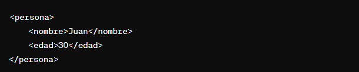
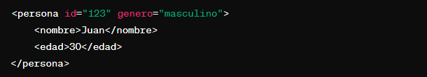

XML (Extensible Markup Language) fue desarrollado en la década de 1990 por un equipo de ingenieros liderado por Tim Bray, Jean Paoli y Michael Sperberg-McQueen. Estos expertos formaban parte del World Wide Web Consortium (W3C) y del grupo de trabajo encargado de lenguajes de marcado.
El propósito principal detrás de la creación de XML era proporcionar un formato de texto legible tanto para humanos como para máquinas, que permitiera la representación estructurada de datos de manera flexible. A diferencia de HTML, que estaba diseñado para la presentación de información en la web, XML se ideó como un estándar para el intercambio de datos entre sistemas heterogéneos.
La capacidad de definir etiquetas personalizadas y estructurar datos de manera autodescriptiva hizo que XML fuera ideal para compartir información entre aplicaciones y plataformas diversas. Su flexibilidad y simplicidad en la representación de datos lo convirtieron en un estándar clave en el intercambio de información en la web y en diversas aplicaciones.
XML sigue normas específicas para garantizar la correcta estructuración de documentos. A continuación, se detallan algunas normas clave.
Todo documento XML debe tener un elemento raíz único que englobe a todos los demás elementos.
Las etiquetas deben abrirse y cerrarse en el orden correcto y no deben superponerse.
Los atributos deben ir entre comillas (simples o dobles) para mantener la consistencia.
XML distingue entre mayúsculas y minúsculas, por lo que los nombres de etiquetas y atributos deben escribirse de manera coherente.
Un documento XML debe cumplir con todas las reglas sintácticas para considerarse bien formado.
Estas son solo algunas de las normas básicas de sintaxis y estructura de XML. Es esencial seguir estas reglas para asegurar la coherencia y la interpretación correcta de los datos.
La sintaxis de XML, o Extensible Markup Language, se basa en el uso de marcas y etiquetas para estructurar la información de manera jerárquica. En XML, los documentos están compuestos por elementos, cada uno rodeado por etiquetas de apertura y cierre, y pueden contener atributos que proporcionan información adicional sobre esos elementos.
Por ejemplo, un elemento simple podría ser representado así:
En este caso, "persona" es el elemento principal, mientras que "nombre" y "edad" son elementos secundarios. Las etiquetas de apertura y cierre definen el inicio y el fin de cada elemento. Además, los atributos pueden ser utilizados para proporcionar detalles adicionales.
XML es especialmente útil en el intercambio de datos entre sistemas heterogéneos, como bases de datos, aplicaciones web y servicios. Su flexibilidad permite definir estructuras de datos personalizadas, y su sintaxis clara facilita la interpretación y procesamiento de la información. Al cumplir con las reglas de sintaxis de XML, los documentos se consideran bien formados y válidos, asegurando una correcta interpretación por parte de las aplicaciones que los utilizan.
En el ámbito empresarial, XML desempeña un papel crucial al ofrecer un formato estandarizado para el intercambio de datos entre sistemas heterogéneos. Este lenguaje de marcado extensible se utiliza en una variedad de aplicaciones, contribuyendo a mejorar la eficiencia y la interoperabilidad en el entorno empresarial.
Una de las aplicaciones más destacadas de XML en el ámbito empresarial es el intercambio de datos. XML proporciona una estructura flexible y legible que facilita la transferencia de información entre diferentes plataformas y aplicaciones. Esta capacidad de intercambio de datos se utiliza en sistemas de gestión empresarial (ERP) para garantizar una comunicación eficiente entre módulos y departamentos, mejorando la coherencia y la precisión de la información.
Además, XML se emplea en el desarrollo de estándares de comunicación empresarial. Al definir esquemas XML específicos para determinados sectores o procesos, las empresas pueden establecer normas que facilitan la integración de sus sistemas con los de socios comerciales y proveedores. Esto promueve la interoperabilidad y simplifica la colaboración en cadenas de suministro y redes comerciales.
Otra aplicación destacada es la configuración y personalización de aplicaciones empresariales. XML se utiliza para describir la configuración de software y aplicaciones, permitiendo a las empresas ajustar y personalizar sus soluciones según sus necesidades específicas. Esto proporciona flexibilidad y agilidad en la adaptación de sistemas a cambios internos o requisitos del mercado.
En resumen, XML se ha convertido en una herramienta fundamental en el ámbito empresarial, facilitando el intercambio de datos, estableciendo estándares de comunicación y permitiendo la configuración personalizada de aplicaciones, contribuyendo así a la eficiencia y la integración en el entorno empresarial.